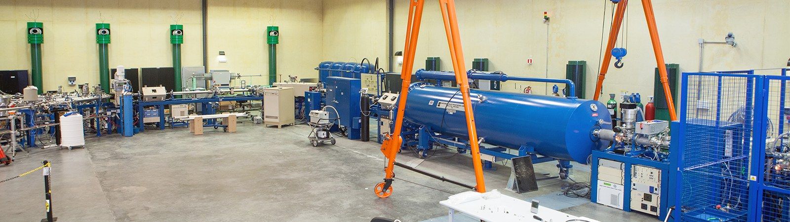
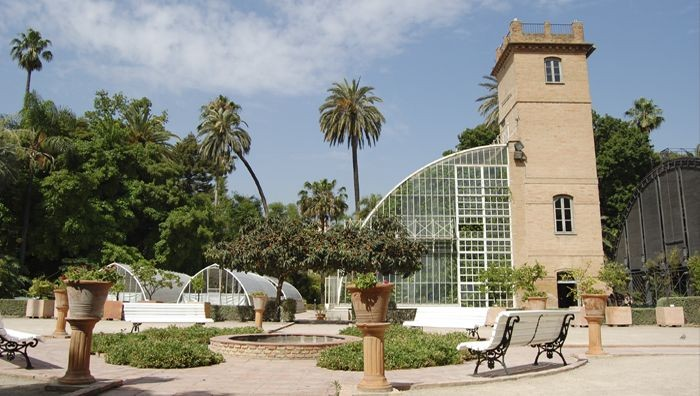
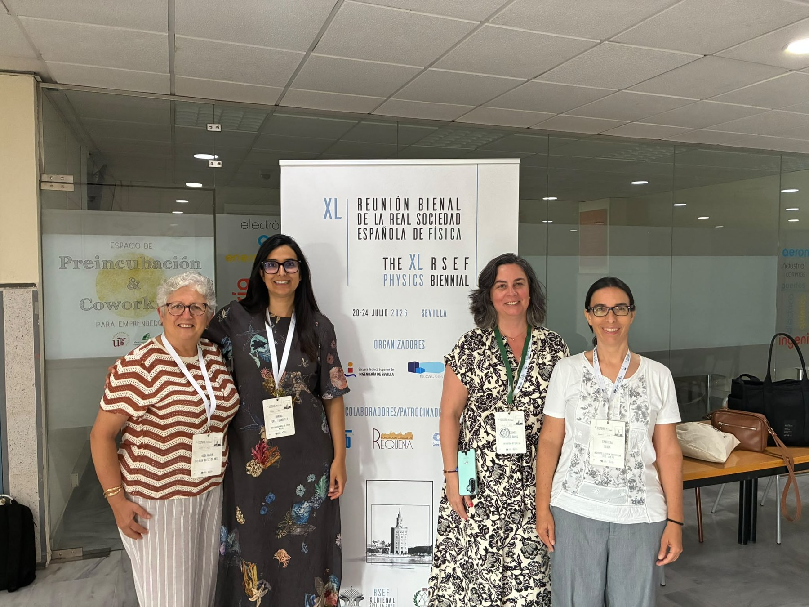

Imagen molecular
PET, SPECT y teragnosis
Ciencia · Tecnología · Salud
Conectamos a la comunidad investigadora, clínica, académica e industrial que desarrolla y aplica la física a la prevención, el diagnóstico y el tratamiento de enfermedades.
PET, SPECT y teragnosis
TC, RM y ultrasonidos
Dosimetría y haces
IA, simulación y cuantificación
El grupo
El Grupo Especializado de Física Médica reúne a profesionales que investigan, desarrollan, validan y aplican tecnologías físicas en medicina. Actúa como espacio de encuentro entre universidades, centros de investigación, hospitales, organismos públicos y empresas.
Su misión es impulsar la colaboración científica, la formación, la transferencia de conocimiento y la visibilidad de la física médica dentro de la RSEF y ante la sociedad.
Facilitar el intercambio entre investigación básica, desarrollo tecnológico y práctica clínica.
Promover seminarios, jornadas y recursos para todas las etapas de la carrera profesional.
Dar visibilidad a nuevas metodologías, infraestructuras, proyectos y oportunidades de colaboración.
Contribuir al debate científico e institucional sobre el papel de la física en la medicina.
Áreas científicas
La física médica abarca desde la interacción de la radiación con la materia hasta la imagen cuantitativa, la instrumentación, la inteligencia artificial y los modelos computacionales.
Desarrollo, reconstrucción y validación de imagen anatómica, funcional y molecular mediante PET, SPECT, TC, RM, ultrasonidos, óptica y técnicas híbridas.
Planificación, verificación, detectores, protonterapia, terapias avanzadas y optimización de dosis.
Radiofármacos, dosimetría interna, imagen molecular y tratamientos dirigidos.
Evaluación y optimización de exposiciones médicas, seguridad y garantía de calidad.
Monte Carlo, radiómica, aprendizaje automático, gemelos digitales y análisis reproducible.
Sensores, electrónica, acústica, fotónica y sistemas multimodales para investigación y clínica.
Actividades
Un espacio para difundir congresos, jornadas, webinarios, convocatorias y actividades organizadas o apoyadas por el GEFM.
Encuentro entre investigación y aplicación clínica de la física médica dentro de la reunión bienal de la Real Sociedad Española de Física.
Consultar información ↗Advancing Healthcare through Physics: Bridging Science and Patient Care for a Sustainable Future
Valencia (Spain) from September 23rd to 26th 2026
Web oficial ECMP 2026 ↗Archivo de reuniones
Consulta los programas, contribuciones, libros de resúmenes y documentación de las reuniones anteriores.

Reunión presencial celebrada en el Centro Nacional de Aceleradores, con programa científico y documentación accesibles en Indico.
Consultar archivo ↗
Edición celebrada en el Jardín Botánico de la Universitat de València, con programa, contribuciones y libro de resúmenes.
Consultar archivo ↗Noticias de interés
Reseñas de actividades, reconocimientos, iniciativas y acontecimientos relevantes para el GEFM y su comunidad científica.
La Sociedad Española de Física Médica (SEFM) y el Grupo Especializado de Física Médica (GEFM) de la RSEF han puesto en marcha una encuesta conjunta para conocer la situación real de la investigación en física médica en España.
Estimados colegas del GEFM,
La Sociedad Española de Física Médica (SEFM) y el Grupo Especializado de Física Médica (GEFM) de la Real Sociedad Española de Física (RSEF) han puesto en marcha una encuesta conjunta dirigida a conocer la situación real de la investigación en física médica en España. La iniciativa se enmarca en el convenio marco de colaboración suscrito por ambas sociedades a inicios de 2026, que contempla entre sus líneas de trabajo el desarrollo de investigaciones conjuntas, la organización de jornadas conjuntas y la elaboración de recomendaciones profesionales.
La física médica española produce investigación de calidad, pero lo hace de forma dispersa: entre servicios hospitalarios, grupos universitarios y centros de investigación, con recursos, tiempos protegidos y estructuras de apoyo muy desiguales. No existe hoy una fotografía agregada de esa realidad. El objetivo de la encuesta es precisamente construirla: identificar quién investiga, con qué medios, qué barreras encuentra y qué apoyos necesitaría. Los resultados permitirán a la SEFM y a la RSEF orientar sus actuaciones —formación, convocatorias, interlocución institucional— con datos objetivos, disponer de argumentos sólidos ante administraciones, centros y agencias financiadoras, y favorecer el contacto entre grupos.
Encuesta: https://forms.cloud.microsoft/e/68J3AB12Hp?origin=lprLink ↗
En este primer intento de recabar los datos, el plazo de respuesta finaliza el 31 de octubre de 2026.
Para cualquier duda sobre la encuesta puede escribirse a secretaria@sefm.es.
¡Animaos a participar!
Saludos cordiales,
Junta directiva GEFM

Del 21 al 23 de julio de 2026, el Simposio del GEFM reunió a investigadores, profesionales y estudiantes para compartir avances en imagen biomédica, dosimetría, radiobiología, medicina nuclear, inteligencia artificial aplicada a la salud y nuevas tecnologías para el diagnóstico y el tratamiento.
Del 21 al 23 de julio de 2026 se celebró en Sevilla, en el marco de la XL Reunión de la Real Sociedad Española de Física (RSEF), el Simposio del Grupo Especializado en Física Médica (GEFM). El encuentro reunió a investigadores, profesionales y estudiantes para compartir avances recientes en imagen biomédica, dosimetría, radiobiología, medicina nuclear, inteligencia artificial aplicada a la salud y nuevas tecnologías para el diagnóstico y el tratamiento. El programa científico incluyó siete ponencias invitadas: cuatro impartidas por especialistas de reconocido prestigio y tres a cargo de personas galardonadas por los grupos especializados de Física Médica y Física Nuclear.
La primera jornada estuvo dedicada a reforzar las relaciones entre el GEFM de la RSEF y la Sociedad Española de Física Médica (SEFM) mediante una sesión conjunta. La presidenta de la SEFM, Maruxa Pérez, abrió el programa con la conferencia «Estrechando el vínculo entre la investigación y la clínica: el papel de las sociedades científicas», en la que presentó la actividad de la sociedad y los principales retos de la Física Médica en el ámbito clínico. Su intervención destacó la necesidad de estrechar la colaboración entre investigación y práctica asistencial, así como de impulsar iniciativas compartidas en formación, innovación y transferencia al sistema sanitario.
José D. Sanmartín Sierra (Universidad de Sevilla) completó esta aproximación desde el entorno hospitalario con la ponencia «La física invisible en una institución sanitaria: electromedicina e ingeniería clínica», en la que puso de relieve el papel esencial, aunque con frecuencia poco visible, de la electromedicina y la ingeniería clínica en el funcionamiento seguro y eficiente de las instituciones sanitarias.
La sesión conjunta con la SEFM incluyó asimismo comunicaciones sobre cartografía temporal de alta resolución de la oxigenación retiniana, presentada por Meritxell Vilaseca (Universitat Politècnica de Catalunya); la extracción de grafos vasculares simplificados a partir de micro-CT murina, presentada por Cindy M. Solano-Cordero (Universidad Complutense de Madrid); y el desarrollo de cámaras Compton para imagen médica, con los resultados de MACACO y las perspectivas del proyecto AIDER, presentado por Gabriela Llosá (Instituto de Física Corpuscular, IFIC, CSIC–Universitat de València). La jornada concluyó con una sesión de networking orientada a facilitar nuevas colaboraciones.
La segunda jornada acogió la tradicional sesión conjunta del GEFM con el Grupo Especializado de Física Nuclear (GEFN). Las contribuciones mostraron la estrecha conexión entre la interacción de la radiación con la materia y sus aplicaciones médicas, abordando la monitorización de dosis en terapia por captura neutrónica de boro, la caracterización de campos de irradiación para BNCT, la espectrometría neutrónica en protonterapia, el desarrollo de haces de protones para radiobiología FLASH, el estudio del LET en terapia con iones de helio, la dosimetría con detectores de carburo de silicio y la microdosimetría de protones. También se presentó un modelo cinético y dosimétrico para estudiar cómo la afinidad, la internalización y la retención intracelular de radiofármacos emisores alfa condicionan la dosis absorbida in vitro.
En la tercera jornada hubo dos nuevas charlas invitadas. Lourdes Marcano (Universidad de Oviedo) revisó el potencial de las nanoestructuras magnéticas como mediadores térmicos en terapia oncológica. Su conferencia analizó tanto la hipertermia magnética como la terapia fototérmica, las bases físicas que determinan su eficiencia y los criterios necesarios para optimizar el diseño de nanomateriales destinados a estas aplicaciones. A continuación, Ane Etxebeste (INSA Lyon, laboratorio CREATIS) presentó desarrollos recientes en simulación Monte Carlo avanzada para sistemas de tomografía por emisión, con especial atención a la imagen SPECT y Compton en terapias con radionúclidos y a las estrategias de reducción de varianza para acelerar las simulaciones.
El programa del jueves se completó con trabajos sobre la determinación del valor de excitación medio del agua para protonterapia, el efecto de las fluctuaciones de pérdida de energía y del transporte de electrones secundarios en la dosimetría radial, modelos de inteligencia artificial para predicción individualizada de supervivencia, radiobiología con protones acelerados por láser, verificación del alcance en protonterapia mediante imagen de gamma prompt y caracterización física multiparamétrica de células con resonadores de microcanal suspendido.
Las personas galardonadas con los premios a las mejores tesis presentaron los principales resultados de sus investigaciones. Marina García Cardosa (Universidad de Navarra), premio a la mejor tesis doctoral del GEFM 2024–2025 y accésit del Premio RSEF-EPJ+ en la modalidad de Física Aplicada, expuso un modelo personalizado para cuantificar la irradiación de la sangre circulante durante tratamientos de radioterapia. Irene Pi (Instituto de Instrumentación para Imagen Molecular, CSIC–Universitat Politècnica de València), accésit del premio a la mejor tesis del GEFM, presentó estrategias de codificación espacio-temporal para obtener tomografía fotoacústica de alta resolución con menores requisitos de hardware. Por su parte, Alejandro López Montes (Universidad de Berna e Inselspital Bern), cuya tesis fue desarrollada en la Universidad Complutense de Madrid, presentó nuevos retos y aplicaciones de los modelos generativos en imagen PET. Su tesis Improved Techniques for PET Imaging recibió el Premio GEFN–ATI Sistemas a la mejor tesis doctoral en la categoría de Aplicaciones de la Física Nuclear.
Además de las ponencias invitadas, el simposio incluyó numerosas comunicaciones científicas y espacios de discusión que favorecieron el intercambio entre investigadores de universidades, hospitales, centros del CSIC y otras instituciones nacionales e internacionales, así como la participación activa de personal investigador en distintas etapas de su carrera.
La organización agradeció especialmente el apoyo de la Fundación Ciudad de Requena y el CNA, cuya contribución facilitó la celebración del encuentro.
El simposio volvió a poner de manifiesto el excelente momento que atraviesa la Física Médica en España, caracterizado por una intensa actividad investigadora y por el desarrollo de tecnologías avanzadas orientadas a mejorar el diagnóstico y el tratamiento de las enfermedades. Además, supuso un paso relevante para reforzar la colaboración entre el GEFM de la RSEF y la SEFM y establecer las bases de futuras actividades conjuntas. Como continuidad de esta labor, el GEFM prevé organizar una jornada científica el próximo año, que incluirá una nueva sesión conjunta con la SEFM, mientras que la siguiente edición de su simposio tendrá lugar en 2028 en el marco de la Reunión Bienal de la RSEF.
Recursos
Una biblioteca viva para compartir materiales científicos, docentes y profesionales relevantes para la comunidad.
Grabaciones de conferencias, mesas redondas y actividades formativas.
Ver colección →Programas, presentaciones, recomendaciones y materiales compartidos.
Consultar →Becas, contratos, tesis, estancias y convocatorias de financiación.
Ver oportunidades →Artículos y actualidad científica publicados por la RSEF.
Visitar revista ↗Talento joven
El GEFM quiere facilitar que estudiantes y jóvenes profesionales conozcan la disciplina, encuentren formación y conecten con grupos de investigación y entornos clínicos.
Gobernanza
Composición renovada el 27 de mayo de 2025.
IFIC · Universitat de València
Perfil institucional
Perfil institucional
Perfil institucional
Perfil institucional
Perfil institucional
Perfil institucional
Perfil institucional
Forma parte
Los miembros de la RSEF pueden adscribirse al Grupo Especializado de Física Médica sin cuota adicional y participar en sus reuniones, actividades e iniciativas.
Contacto
Utiliza este espacio para proponer actividades, compartir oportunidades, enviar noticias o plantear colaboraciones.